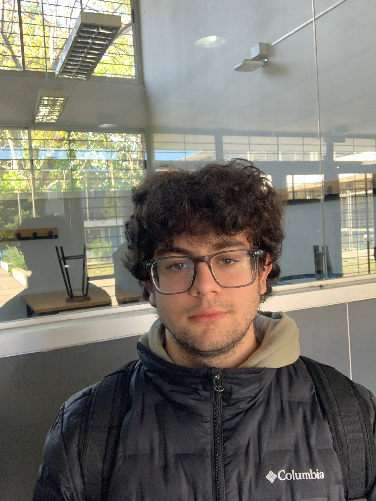

Thiago Blanco
Soy un Estudiante de Informática de 3° año en el ISBO, siento que mi fuerte es la resolución de problemas ya sea en código o en ideas, mi lenguaje preferido es python ya que lo considero fácil de utilizar y estoy en busqueda de nuevas oportunidades de trabajo para expandir mis experiencias, conocimientos y currículum.
| Horario | Lunes | Martes | Miércoles | Jueves | Viernes |
|---|---|---|---|---|---|
| 07:00 - 08:00 | Desarrollo en Java | Diseño Web con CSS | Modelado de Base de Datos | Práctica de Inglés Técnico | Configuración de Redes |
| 08:00 - 09:00 | Estructuras de Datos | HTML Semántico | Consultas SQL | Documentación Técnica | Simulación en Packet Tracer |
| 09:00 - 10:00 | Programación Orientada a Objetos | Diseño de Responsividad | Administración MySQL | Lectura Técnica en Inglés | Topologías de Red |
| 10:00 - 11:00 | Desarrollo de Interfaces | Animaciones CSS | Optimización de Consultas | Conversación en Inglés | Seguridad de Redes |
| 11:00 - 12:00 | Resolución de Problemas | Maquetación Web | Diseño Relacional | Práctica de Vocabulario Técnico | Configuración de Routers |
| 12:00 - 13:00 | Proyecto Java | Portfolio Web | Proyecto Base de Datos | Comunicación Profesional | Pruebas de Conectividad |